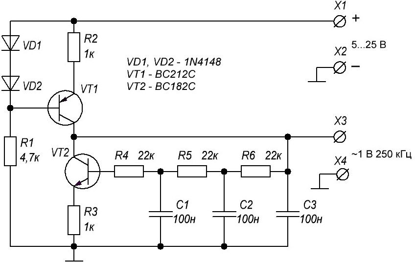
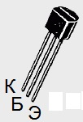

Простой генератор на 250 кГц
Часто для измерений или тестов требуется иметь под рукой простой, стабильный, с небольшими искажениями генератор синусоидальных сигналов. Предлагаемая на рисунке 1 схема довольно простая и её можно запитать непосредственно от исследуемого устройства.
Особенностью схемы является генератор тока, выполненный на элементах VТ1, R1, R2, VD1, VD2, от которого запитан генерирующий транзистор VТ2. Благодаря такому включению достигнута высокая стабильность частоты и амплитуды выходного сигнала. Для примера: при изменении напряжения питания на 100% (например, с 5 В до 10 В) амплитуда и частота выходного сигнала изменяется всего на 10%.

Рис. 1 - Схема электрическая принципиальная генератора на 250 кГц
В схеме можно применить любые маломощные кремниевые транзисторы соответствующей структуры с коэффициентом усиления не менее 180. Например, транзистор BC182 можно заменить транзистором КТ3102, а транзистор BC212 - транзистором КТ3107
При указанных на схеме номиналах амплитуда выходного сигнала составит около 1 В, а частота 250 кГц.
Настроить генератор на другую частоту можно подбором ёмкостей С1-С3 (все три должны быть одинаковые). Для примера, если конденсаторы С1, С2, С3 установить номиналом 220 мкФ, то частота сигнала составит всего 0,07 Гц.
В случае применения электролитических конденсаторов (большой ёмкости) следует соблюдать полярность подключения.
Справочный материал:

Рис. 2 - Цоколёвка транзисторов BC182 и BC212